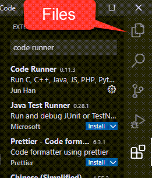
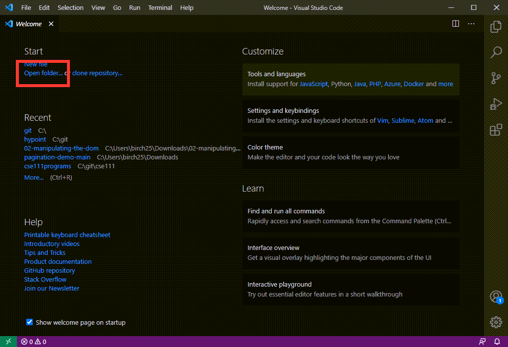
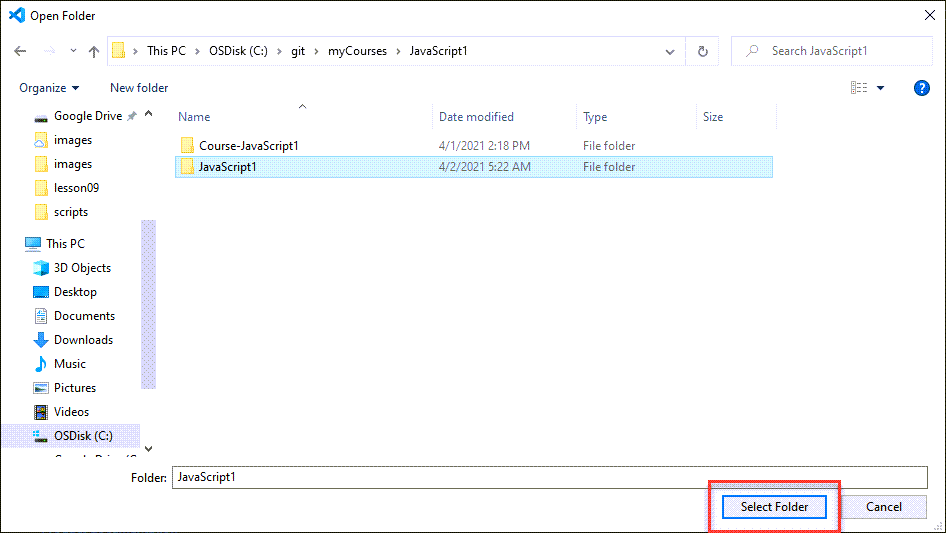
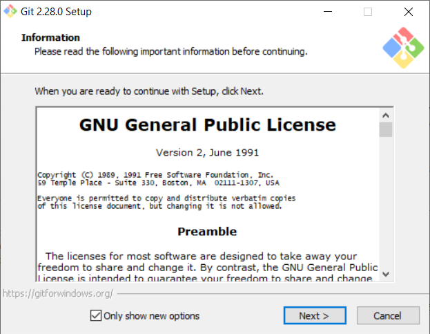
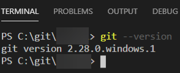
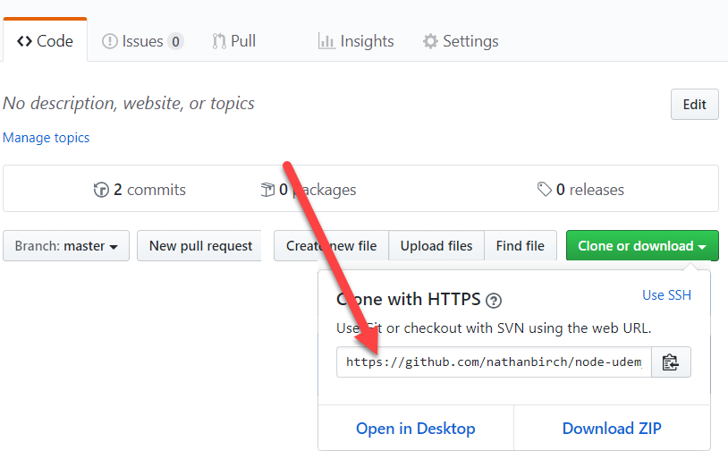
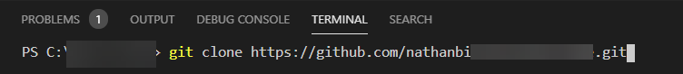

Computer Setup
Our goal today consists of setting up our computers so we can write, run and save our code. Here are our tasks:
-
Download VS Code (used to write code)
-
Download Google Chrome (used to run our code)
-
Download git (Used to manage our code)
-
Create a github account (Used to save our code and market ourselves)
If you took the JavaScript 1 course with Nathan Birch, you only have to do the following:
-
Create a new github repository called
javascript2. -
Use the git clone command to clone this repository on your computer.
-
The following video goes through this process in detail and will help get you set up for the whole course.
Complete Course Setup (VS Code, Chrome, Git, Github, etc.)
This video goes through the entire course setup, all of the installs and how to get things started along with a few extra tips on using git version control. (Anytime it says JavaScript1, use JavaScript2 because this is the JavaScript2 Course now).
VS Code
To set up our computers to write JavaScript, all we need to do is download a text editor. We will be using Visual Studio Code also known as VS Code.
-
Open this webpage in your browser.
-
Download VS Code for your operating system.
-
Install VS Code.
-
Accept all the default settings.
Now that it is installed. Open VS Code. We are going to download two extensions. Click on the Extensions Icon
and search code runner, then click install. Now search for Live Server and click
install.
Additionally, you may also watch the following media content that includes helpful tips and tricks to help you work efficiently with this program.
You can return to your files in VS code by clicking on the file explorer icon:
Google Chrome
You will not need Chrome to write JavaScript code, but we will need it to run the code. Just like if I have a movie file like avengers.mp4, I won't open it with Zoom...I will open it with a Media Player.
You could technically use any browser to run the code, however, we will be using some tools built into Chrome to help us with our code.
-
Open this webpage in your browser.
-
Download Chrome
-
Install it
File Organization
This part of the tutorial does not require you to install anything, but you are encouraged to store all of your code in one place on your computer. This is important because eventually, your code will be used in what's called a professional portfolio to help you get a job.
Create a folder on your computer for this class called JavaScript2.
-
Open VS Code. You should see something similar to this:
 -
Click "Open folder" (emphasized above) and select the folder your made for our class.

Github Account
Lastly, we will use github to store all of our code. Github is used very widely in industry and we will also use it for your professional portfolio, to show to potential employers as you grow your skillset in web development. GitHub is essentially a big database of source code for people all around the world. You can make your source code public or private and configure many different permissions and settings. Each project has its own repository, or "repo". This repository will be a clone of the one on your local computer. Thus, you will have two copies of your code, one on your local computer and one at GitHub.
Install Git
-
If you haven't before, you'll need to and install git. If you already have git installed, skip this step.
-
Go to git-scm.com and choose the appropriate download for your operating system.
-
Run the installer with the default settings and wait for the installation to finish.

-
Restart VS Code if you have it open, and open a new terminal window by selecting New Terminal inside of the Terminal menu.
-
In your terminal, execute
git --version.

-
If "git --version" produces an error, make sure git has been added to your PATH environment variable, then restart VS Code.
Instructor Tip:
On Windows, Git is usually installed at
C:\Program Files\Git\cmd. This is the location that should be added to your PATH.

Create a new repository
-
Go to GitHub.com and sign up for a new account if you haven't already. If you already have an account, that is perfect, you can use it here.
-
After creating an account, return to GitHub.com and sign in. In the upper right corner of the screen you should see a "+" icon. Click this and select "New Repository".
-
Choose a name for your repository (likely javascript2 or something similar).
-
Leave the repo public and do not check the box for a readme. Leave .gitignore and license as "none".
Instructor Tip:
It's not technically a problem if you add these other files now, but it makes it a little more difficult when you go to push to GitHub for the first time, because you'll have conflicts that you'll have to resolve. So at this point, it's easiest to leave everything blank.
-
Click the button to create the repository.
-
On the page that follows, you should see a URL for your new repository (e.g., "https://github.com/username/repositoryname.git"). Copy this URL for use later on.
Set up the repository on your computer
-
In VS Code, selectOpen Folder from the File menu. Open the
JavaScript2folder you just created. -
Open a new terminal window by selecting New Terminal inside of the Terminal menu.
-
Return to GitHub, open your project repository, copy the link to clone it

-
In your terminal, execute "git clone --your url--"


Conclusion
Congratulations! You have successfully set up everything that you will need for this course. If you had any issues, please contact your instructor.